本文转载自: http://blog.163.com/yucheng_xiao/blog/static/76600192201393092918776/
一、基本原理
CRC检验原理实际上就是在一个p位二进制数据序列之后附加一个r位二进制检验码(序列)，从而构成一个总长为n＝p＋r位的二进制序列；附加在数据序列之后的这个检验码与数据序列的内容之间存在着某种特定的关系。如果因干扰等原因使数据序列中的某一位或某些位发生错误，这种特定关系就会被破坏。因此，通过检查这一关系，就可以实现对数据正确性的检验。
二、几个基本概念
1、帧检验序列FCS（Frame Check Sequence）：为了进行差错检验而添加的冗余码。
2、多项式模2运行：实际上是按位异或(Exclusive OR)运算，即相同为0，相异为1，也就是不考虑进位、借位的二进制加减运算。如：10011011 + 11001010 = 01010001。
3、生成多项式（generator polynomial）：当进行CRC检验时，发送方与接收方需要事先约定一个除数，即生成多项式，一般记作G（x）。生成多项式的最高位与最低位必须是1。常用的CRC码的生成多项式有：
CRC8=X8+X5+X4+1
CRC-CCITT=X16+X12+X5+1
CRC16=X16+X15+X5+1
CRC12=X12+X11+X3+X2+1
CRC32=X32+X26+X23+X22+X16+X12+X11+X10+X8+X7+X5+X4+X2+X1+1
每一个生成多项式都可以与一个代码相对应，如CRC8对应代码：100110001。
三、CRC检验码的计算
设信息字段为K位，校验字段为R位，则码字长度为N(N=K+R)。设双方事先约定了一个R次多项式g(x)，则CRC码：
V(x)=A(x)g(x)=xRm(x)+r(x)
其中: m(x)为K次信息多项式， r(x)为R-1次校验多项式。
这里r(x)对应的代码即为冗余码，加在原信息字段后即形成CRC码。
r(x)的计算方法为：在K位信息字段的后面添加R个0，再除以g(x)对应的代码序列，得到的余数即为r(x)对应的代码(应为R－1位；若不足，而在高位补0)。
计算示例
设需要发送的信息为M = 1010001101，产生多项式对应的代码为P = 110101，R＝5。在M后加5个0，然后对P做模2除法运算，得余数r(x)对应的代码：01110。故实际需要发送的数据是101000110101110。
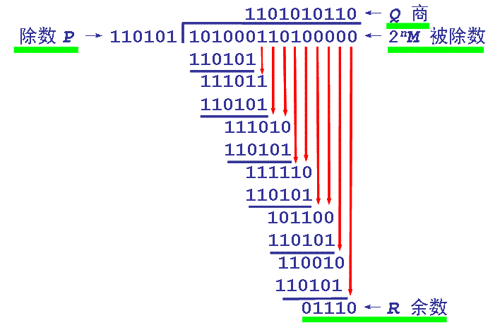
图 3.1
四、错误检测
当接收方收到数据后，用收到的数据对P（事先约定的）进行模2除法，若余数为0，则认为数据传输无差错；若余数不为0，则认为数据传输出现了错误，由于不知道错误发生在什么地方，因而不能进行自动纠正，一般的做法是丢弃接收的数据。
五、几点说明：
1、CRC是一种常用的检错码，并不能用于自动纠错。
2、只要经过严格的挑选，并使用位数足够多的除数 P，那么出现检测不到的差错的概率就很小很小。
3、仅用循环冗余检验 CRC 差错检测技术只能做到无差错接受（只是非常近似的认为是无差错的），并不能保证可靠传输。
六、数学推理
虽然以上内容已经有了一个较为清晰的数学计算过程，在这一小节将给出更为严谨的数学模型，以加深印象：
与第三节内容保持一致
1.设欲传输的信息有K位,如图6.1所示
2.首先将欲传输的数据序列m(x)乘以 XR , 其中R为g(x)的最高次冥。
3.将得到的多项式XR m(x)除以约定的多项式g(x)
4.忽略除法结果的“商”，取出其余数，并与XRm(x)相加，形成K+R位的发送序列，即：m’(x) = XRm(x) +r(x)
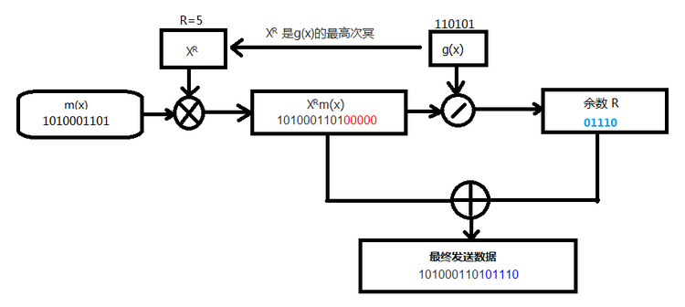
图 6.1
CRC编码过程如下：
设待校验的信息码有k位，即：m = (mk-1、mk-2、mk-3……m1、m0), 多项式m(x)可表示为
m(x) = mk-1xk-1+ mk-2xk-2 +……m1x1+ m0x0 ------------------------------------------------------------------------ 式（1）
用多项式g(x)的最高次幂R对应的XR 乘以m(x)，将得到式（2）
XR m(x) = mk-1xk+R-1+ mk-2xk+R-2 +……m1x1+R+ m0x0+R -------------------------------------------------------- 式（2）
将XR m(x) 模2除以g(x)，得到多项式商为A(x),余数为r(x)，即：
A(x)g(x) = XR m(x) +r(x) -----------------------------------------------------------------------------------------------------式（3）
余数多项式r(x)可表示为
r(x) = rR-1xR-1+ rR-2xR-2 +……r1x1+ r0x0 ------------------------------------------------------------------------------------式（4）
将式（2）和式（4）代入式（3）得
A(x)g(x) = mk-1xk+R-1+ mk-2xk+R-2 +……m1x1+R+ m0x0+R + rR-1xR-1+ rR-2xR-2 +……r1x1+ r0x0 --------式（5）
式（5）对应的码组为K+R位，即：
N = (mk-1+ mk-2 +……m1+ m0 + rR-1+ rR-2 +……r1+ r0) ------------------------------------------------------------式（6）
从M到N就是CRC的编码过程mk-1+ mk-2 +……m1+ m0 为k位信息码；rR-1+ rR-2 +……r1+ r0为R位校验码。
在信息接收端，将接受到的K+R位码除以相同的多项式g(x),根据式（3）所产生的余数为0，则接受到的数据信息正确无误，否则则认为信息在传输过程中产生的误码。
根据式（1）~式（6），CRC编码必须进行模2除运算，CRC的校验位就是模2除得到的余数，如果余数用寄存器的存数表示，模2除用异或门表示，那么通用的CRC串行电路就可以同图6.2所示的电路来实现。
在计算过程中，线性反馈移位寄存器是这样一种移位寄存器：它的输入位是之前状态的一个线性函数。如图7.1
蓝色方框位为输入位，而之前的状态就是0110，显然，按照这个图示，bit0的下一次的状态是bit2,bit3,为自变量的函数值。
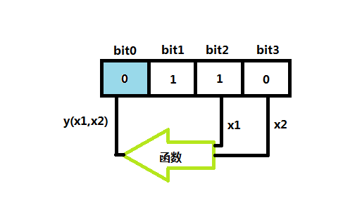
图 7.1
那么这个函数是可以是什么呢？对于二进制算法无非就是一些门电路了，而最常用的线性函数则是异或门XOR。LFSR的初始化值称之为 seeD（形象点就是火种，比如7.1中的0110）,而且对寄存器的操作也是确定的，那么由这个移位寄存器产生的数据流也同样是由当前的状态确定，另一方面，因为这个移位寄存器的位数是有限且确定的，所以数据流最终必然会进入一个重复的周期循环中
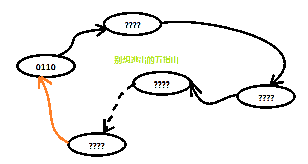
图 7.2
说明：
1.因为函数的唯一性，所以有了箭头的唯一性。
2.因为4位LFSR的限制，所以，不管数据怎么形成，最终总是难免会重新进入0110的状态。
所以这个循环必然存在，正如如来佛对孙悟空说的，你怎么跑都跑不出我的五指山，当然实际情况并不是只有5个状态。
问题到这一步又会产生新的一个疑问？到底五指山有几根指头呢？答案是这样的——只要反馈函数选择适当，产生的随机序列将会跑很多的“指头”才能返回到初始状态，也就是说循环周期会很长。具体的例子请参考图7.3
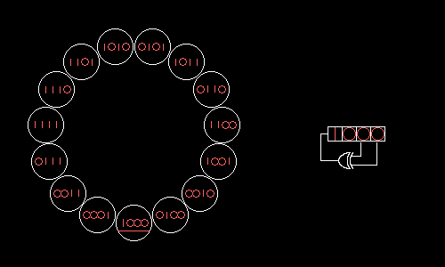
图 7.3
A 4-bit Fibonacci LFSR with its state diagram. The
XOR gate provides feedback to the register that shifts bits from left to right. The maximal sequence consists of every possible state except the "0000" state.
CRC（循环冗余校验）与LFSR有很相似的地方，为什么这么说呢？继续分析，先来看一下一种特殊结构的LFRS。
Galois LFRS (伽罗瓦 线性反馈移位寄存器）
什么是伽罗瓦线性反馈移位寄存器呢？只是为了纪念一个数学家，他的名字叫伽罗瓦，知道这点也就够了，最主要的是掌握它的结构特性，它到底有什么特点呢? 对照图7.4所示
1>模块化；2>异或门插在内部；3>一对多的LFSR
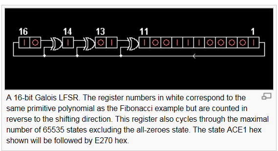
图 7.4
它是一种轮流的结构，能够产生与传统LFSR相同的输出数据流。在讲述这个结构具体运作功能之前，有几个知识点需要建立。
1>什么叫抽头（taps）
在LFSR中影响下一个状态的bit位的位置叫做抽头，在7.1中就是bit2、bit3的位置，在图7.4中为[16. 14. 13. 11]。对应多项式为X16 +X14 +X13+X11+1，在这个多项式中有以下几点值得注意：
a.多项式最后的1不会对应某一个抽头，它对应输出位（最右边一位，即X0）
b.首位直接相连。
c.异或门输出到抽头位置，比如14.13.11；其中一个输入为抽头前一个位置，另一个输入对应输出位。
2>输入位，与输出位
LFSR中最左边的一位为输入位，而最右边的一位称为输出位。输出位与抽头进行异或运算后，数据整体向右移动一位。
运算规律总结（这点非常重要）
1.输出为1时，有异或门的位置，数据被翻转向右移向下一位置。没有异或门 的位置，数直接向右移向下一位置。
2. 输出为0时，有异或门的位置，数据没有被翻转而是直接向右移向下一位置。 没有异或门的位置，数直接向右移向下一位置。
因为输出只能是0或1，所以所有的运算都应该遵循这两条规则，如图7.5所示
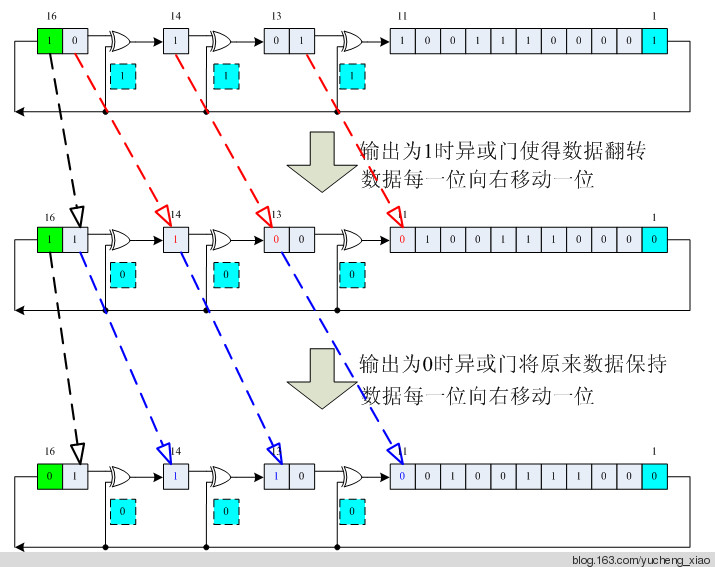
图 7.5
C语言代码实现：
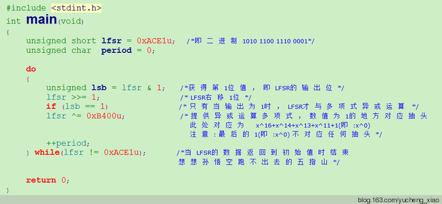
图 7.6
说明：请注意硬件逻辑与C语言逻辑的区别
C语言实现中是先把LFSR中的数据全部右移动一位，然后判断之前的输出位是否为1
为1时，把抽头处的数据翻转，若为0则不变。
这里就有个问题，在硬件电路中是先翻转然后再右移动1位；而在软件语言处理则是先右移1位，然后在相应位置翻转，而实际最终结果是一样的。其实现过程如图7.7所示
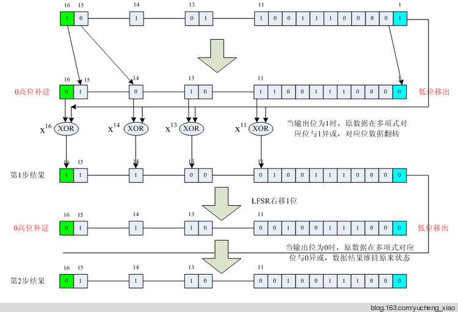
图 7.7
请对比图7.5与图7.7，分析硬件电路与C语言实现同一种算法的不同过程。
CRC模2运算及LFSR电路实现。
设需要发送的信息为M = 1010001101，产生多项式对应的代码为P = 110101，R＝5。在M后加5个0，然后对P做模2除法运算，得余数r(x)对应的代码：01110。故实际需要发送的数据是101000110101110。
对应多项式为110101 即 x5+ x4+ x2+1。
模2除运算过程：
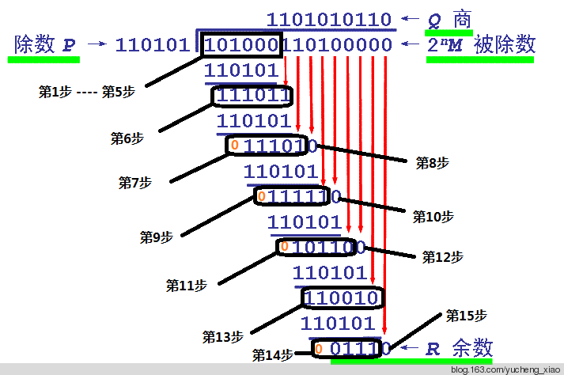
图 7.8
图7.6说明：
左边的步数（如第6步）表示除数与多项式模2减后的余数。
右边的步数（如第8步）表示上一步（如第6步）余数的最高位为0时，把余数左移动一位，并相应带入被除数的1位。
请与图7.7对照分析实际的电路实现过程。
第1步 ———— 第5步：被除数被移入LFSR
应用LFSR运算规律总结，可得到实际模2运算的一种电路图，具体执行请参考图7.9
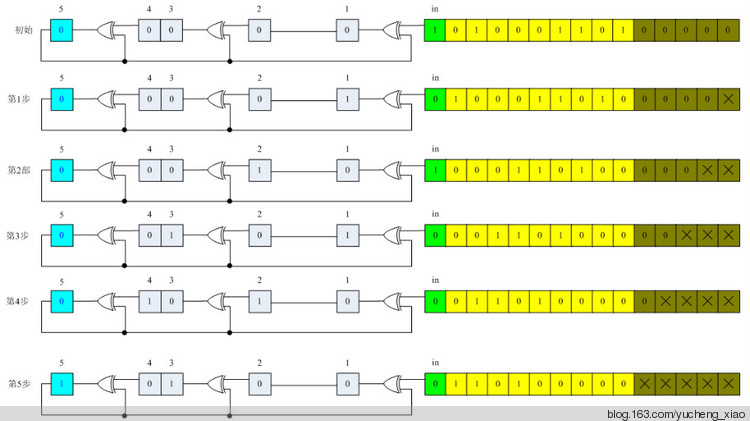
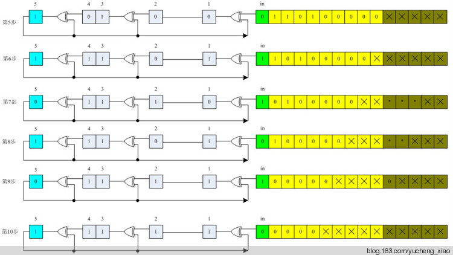
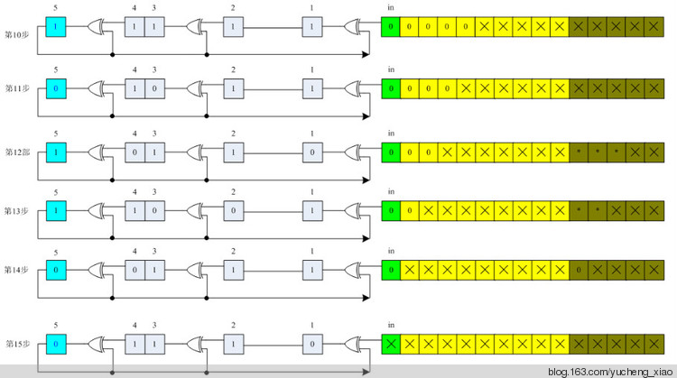
图 7.9